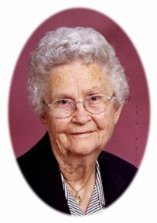
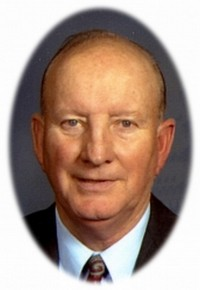

Evelyn Mildred Carlson
K, #68876, f. 3 august 1921, d. 13 januar 2009
Foreldre
Familie: John Edgar Juel (f. 12 april 1920, d. 21 august 2001)
| Sønn | Steve Juel |
| Datter | Nancy Juel |
| Datter | Marne Juel |
| Sønn | David Egar Juel (f. 25 januar 1958, d. 7 november 1974) |
Biografi
Evelyn Mildred Carlson ble født den 3 august 1921 på/i Lincoln County, South Dakota, USA. Hun giftet seg med
John Edgar Juel den 25 februar 1945 på/i Canton, Lincoln County, South Dakota, USA. Hun døde den 13 januar 2009 på/i Good Samaritan Center, Sioux Falls, Minnehaha County, South Dakota, USA. Hun ble gravlagt den 17 januar 2009 på/i Canton Lutheran Cemtery, Canton, Lincoln County, South Dakota, USA.
Evelyn Mildred Carlson was also known as Evelyn Mildred Carlson Juel. Hun bodde på/i Harrisburg, Lincoln County, South Dakota, USA.
| Sist redigert |
23 juni 2026 21:45:55 |
David Egar Juel
M, #68880, f. 25 januar 1958, d. 7 november 1974
Foreldre
Biografi
David Egar Juel ble født den 25 januar 1958 på/i USA. Han døde den 7 november 1974. Han ble gravlagt på/i Canton Lutheran Cemtery, Canton, Lincoln County, South Dakota, USA.
| Sist redigert |
23 juni 2026 21:32:51 |
| Slektskap | 5-menning til Håkon Wahl |
John Albert Carlson
M, #68881, f. 1891, d. 15 april 1966
Biografi
John Albert Carlson ble født i 1891 på/i Sverige. Han giftet seg med
Ruth Ulrickson i 1915 på/i Sioux Falls, Minnehaha County, South Dakota, USA. Han døde den 15 april 1966. Han ble gravlagt på/i Forest Hill Cemetery, Canton, Lincoln County, South Dakota, USA.
John Albert Carlson was also known as Albert Carlson.
| Sist redigert |
23 juni 2026 21:32:51 |
Ruth Ulrickson
K, #68882, f. 1893, d. 1976
Biografi
Ruth Ulrickson ble født i 1893. Hun giftet seg med
John Albert Carlson i 1915 på/i Sioux Falls, Minnehaha County, South Dakota, USA. Hun døde i 1976. Hun ble gravlagt på/i Forest Hill Cemetery, Canton, Lincoln County, South Dakota, USA.
Ruth Ulrickson was also known as Ruth Carlson.
| Sist redigert |
23 juni 2026 21:32:51 |
Anetta Johanna Buus
K, #68883, f. 28 november 1912, d. 18 september 2010
Familie: Oscar Alvin Ramstad (f. 16 oktober 1905, d. 26 april 2009)
| Sønn | Verlyn Ramstad+ (f. 21 mai 1934, d. 24 mars 2002) |
| Sønn | Raymond Ramstad |
| Datter | Janet Ramstad |
| Sønn | Lester Ramstad |
| Datter | Joann Ramstad |

Anetta Johanna Buus Ramstad
Biografi
Anetta Johanna Buus ble født den 28 november 1912 på/i Tea, Lincoln County, South Dakota, USA. Hun giftet seg med
Oscar Alvin Ramstad den 9 desember 1931 på/i Sioux Falls, Minnehaha County, South Dakota, USA. Hun døde den 18 september 2010 på/i Sioux Falls, Minnehaha County, South Dakota, USA. Hun ble gravlagt på/i Canton Lutheran Cemtery, Canton, Lincoln County, South Dakota, USA.
Anetta Johanna Buus was also known as Anetta Johanna Buus Ramstad. Hun was also known as "Netta." Hun bodde på/i Canton, South Dakota, USA.
| Sist redigert |
23 juni 2026 21:45:55 |
Verlyn Ramstad
M, #68888, f. 21 mai 1934, d. 24 mars 2002
Foreldre
Familie: Joann Joyce Ford (f. 5 desember 1936, d. 12 mars 2012)
| Sønn | Daryl Ramstad+ |
| Sønn | Douglas Ramstad |
Biografi
Verlyn Ramstad ble født den 21 mai 1934 på/i Lennox, Lincoln County, South Dakota, USA. Han giftet seg med Betzy Lee den 15 august 1992. Han giftet seg med
Joann Joyce Ford den 8 desember 1955. Han døde den 24 mars 2002 på/i Hawaii, USA.
Verlyn farmed in the Worthing area and owned the meat locker and grocery store I Harrisburg. In the fall of 1972, he moved to Eagle River, AK where he worked as a welder until his retirement.
Verlyn Ramstad flyttet til Hawaii, USA, i 2000.
| Sist redigert |
23 juni 2026 21:45:55 |
| Slektskap | 5-menning til Håkon Wahl |
Oscar E. Oberg
M, #68890, f. 21 januar 1938, d. 6 januar 2010

Oscar E. Oberg
Biografi
Oscar E. Oberg ble født den 21 januar 1938 på/i Sioux Falls, Minnehaha County, South Dakota, USA. Han giftet seg med Janet Ramstad den 19 november 1960 på/i Minnehaha County, South Dakota, USA. Han døde den 6 januar 2010 på/i Sioux Falls, Minnehaha County, South Dakota, USA. Han ble gravlagt på/i Berg Cemetery, Sioux Falls, Minnehaha County, South Dakota, USA.
Oscar E. Oberg bodde på/i Renner, Minnehaha County, South Dakota, USA.
| Sist redigert |
1 april 2025 22:23:53 |
Emil Dobash
M, #68894, f. omtrent 1905
| Sønn | Emil Dobash (f. 25 februar 1928, d. 18 februar 1929) |
Biografi
Emil Dobash ble født omtrent 1905. Han giftet seg med
Hilda Christine Ramstad den 16 januar 1928 på/i Elk Point, South Dakota, USA.
| Sist redigert |
21 november 2012 00:00:00 |
Emil Dobash
M, #68895, f. 25 februar 1928, d. 18 februar 1929
Foreldre
Biografi
Emil Dobash ble født den 25 februar 1928 på/i Minnehaha County, South Dakota, USA. Han døde den 18 februar 1929 på/i Minnehaha County, South Dakota, USA.
| Sist redigert |
1 april 2025 22:23:53 |
| Slektskap | 5-menning til Håkon Wahl |
Evelyn Waleska Edeler
K, #68896, f. 30 september 1915, d. 9 august 1980
Familie: Harold Ingolf Ramstad (f. 26 januar 1910, d. 22 september 1979)
| Datter | Sharon L. Ramstad+ (f. 27 februar 1938, d. 26 februar 2009) |
| Datter | Angeline Kay Ramstad+ |
| Sønn | Paul Ramstad+ |
| Datter | Sheila Ann Ramstad+ |
Biografi
Evelyn Waleska Edeler ble født den 30 september 1915 på/i Russel, Wisconsin, USA. Hun giftet seg med
Harold Ingolf Ramstad den 19 januar 1935 på/i Parker, South Dakota, USA. Hun døde den 9 august 1980 på/i Vista, San Diego County, California, USA. Hun ble gravlagt på/i Canton Lutheran Cemtery, Canton, Lincoln County, South Dakota, USA.
Evelyn Waleska Edeler was also known as Evelyn Waleska Ramstad.
| Sist redigert |
23 juni 2026 21:32:51 |
Arne Ekle
M, #68898, f. 1854, d. 1938
Familie: Anna (f. 1869, d. 1940)
Biografi
Arne Ekle ble født i 1854 på/i Norge. Han giftet seg med
Anna i 1890 på/i South Dakota, USA. Han døde i 1938 på/i USA. Han ble gravlagt på/i Lands Lutheran Cemetery, Hudson, Lincoln County, South Dakota, USA.
Arne Ekle emigrerte til USA i 1874. Han bodde på/i Higland & Norway Townships, Lincoln County, South Dakota, USA. Han bodde på/i Norway, Lincoln County, South Dakota, USA.
| Sist redigert |
23 juni 2026 21:45:55 |
Anna
K, #68899, f. 1869, d. 1940
Biografi
Anna ble født i 1869 på/i Norge. Hun giftet seg med
Arne Ekle i 1890 på/i South Dakota, USA. Hun døde i 1940 på/i USA. Hun ble gravlagt på/i Lands Lutheran Cemetery, Hudson, Lincoln County, South Dakota, USA.
Anna was also known as Anna Ekle.
| Sist redigert |
23 juni 2026 21:45:55 |
Irene Ekle
K, #68900, f. 1917
Foreldre
Biografi
Irene Ekle ble født i 1917 på/i South Dakota, USA.
Irene Ekle bodde på/i Lincoln County, South Dakota, USA.
| Sist redigert |
23 juni 2026 21:45:55 |
| Slektskap | 4-menning 1 gang forskjøvet til Håkon Wahl |
{kind=link}
{kind=link}